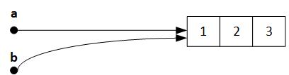
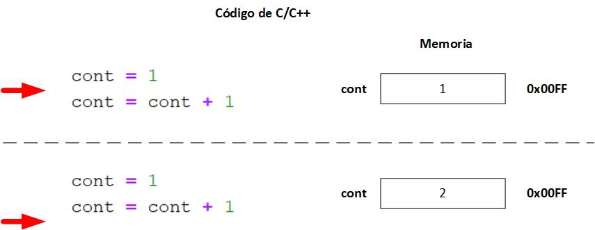
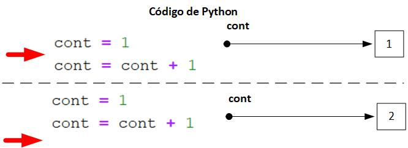
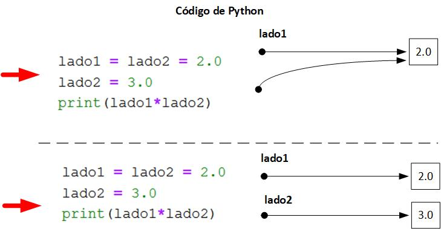
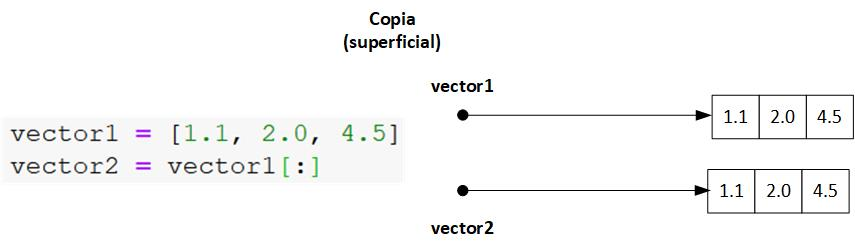
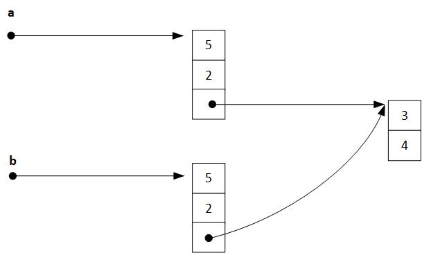
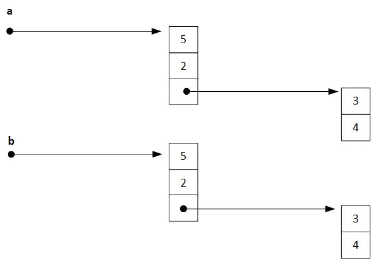

Listas: conceptos avanzados¶
Autores: Rogelio Mazaeda Echevarría, Félix Miguel Trespaderne.
Cortes (slices)¶
Existe un modo muy conveniente para hacer referencia a un conjunto de elementos, una sublista, dentro de la lista. Son los llamados cortes (slices).
La especificación del corte involucra el uso del signo : dentro de los corchetes, flanqueado opcionalmente por dos enteros que especifican los extremos del corte. El extremo inferior estará incluido en el corte, pero el superior no.
Véanse los ejemplos que siguen, ejecutando las celdas en orden:
datos = [1, 20, 30, 40, 5]
datos[1:3]
[20, 30]
Si alguno de los extremos falta, eso implica que todos los elementos desde el principio de la lista (en caso de que falte el primero) y/o hasta el final (en caso de que falte el segundo) son incluidos en el corte.
print(datos, ' datos[1:] --> ', datos[1:]) #imprime los elementos desde el segundo hasta el final de la lista
print(datos, ' datos[:3] --> ', datos[:3]) #imprime los elementos desde el primero hasta el índice 2 incluído
print(datos, ' datos[:] --> ', datos[:]) #imprime todos los elementos de la lista
print(datos, ' datos[:-1] --> ', datos[:-1]) #imprime todos los elementos de la lista, exluyendo el último
print(datos, ' datos[:-2] --> ', datos[:-2]) #imprime todos los elementos de la lista, exluyendo los dos últimos
print(datos, ' datos[2:2] --> ', datos[2:2]) #imprime la lista vacía
[1, 20, 30, 40, 5] datos[1:] --> [20, 30, 40, 5]
[1, 20, 30, 40, 5] datos[:3] --> [1, 20, 30]
[1, 20, 30, 40, 5] datos[:] --> [1, 20, 30, 40, 5]
[1, 20, 30, 40, 5] datos[:-1] --> [1, 20, 30, 40]
[1, 20, 30, 40, 5] datos[:-2] --> [1, 20, 30]
[1, 20, 30, 40, 5] datos[2:2] --> []
¿Qué ha pasado en el último ejemplo? Si los índices superior e inferior del corte coinciden, la lista resultante es la lista vacía. Más adelante encontraremos utilidad a este tipo de construcción.
En realidad, la sintaxis del corte permite un tercer parámetro entero opcional que indica el paso con el que se van a tomar los datos. Si falta, el paso por defecto es 1. Ver ejemplo a continuación:
a = list(range(20))
b = a[2:11:2]
print(a)
print(b)
[0, 1, 2, 3, 4, 5, 6, 7, 8, 9, 10, 11, 12, 13, 14, 15, 16, 17, 18, 19]
[2, 4, 6, 8, 10]
Observe el uso del paso para elegir de la lista original los números de dos en dos.
La mutabilidad de las listas¶
Creando Alias¶
Las listas son objetos mutables que pueden ser modificados in situ. Cuando se utiliza el signo = para realizar una asignación de listas, en realidad lo que ocurre es que existirán, a partir de ese momento, dos nombres (dos etiquetas por así decirlo) que hacen referencia al mismo objeto en memoria: los datos de la lista original.
a = [1, 2, 3]
b = a
a[0] = 10
print(a)
print('A través de b vemos el cambio hecho con a.')
print(b)
[10, 2, 3]
A través de b vemos el cambio hecho con a.
[10, 2, 3]
¿Que ha pasado?
Es importante comprender que, a diferencia de lo que ocurre en otros lenguajes de programación, cuando se utiliza el signo de asignación =, como en la línea 2 del código previo, no se crea un nuevo objeto en memoria, sino que se define un nuevo nombre, un alias, para referirnos al objeto previamente existente.
Para los objetos inmutables, como las cadenas de caracteres, este hecho no tiene mayores implicaciones, porque el dato referenciado nunca va a cambiar. Sin embargo, en el caso de las listas (y otras colecciones que veremos), como son mutables, el hecho de que se modifique el objeto subyacente a través de uno de los identificadores, hace que la operación también sea percibida a través de los otros identificadores que constituyen alias del primero. Este resultado suele sorprender a aquellos programadores sin experiencia previa en Pyhton.
El siguiente esquema ilustra lo que ha pasado.

De manera que ahora se entiende por qué el cambio del primer elemento de a implica también un cambio en b, puesto que hacen referencia al mismo conjunto de datos
La función id() y operador is¶
En este contexto, la función nativa id() y el operador is son recursos que nos ayudan a verificar los conceptos que se están discutiendo.
id()nos devuelve un entero que identifica de manera única los valores en memoria. Puede concebirse como una identificación de la localización de memoria en que se encuentra el dato.ises un operado binario que devuelve un valor lógico que seráTruesi dos identificadores hacer referencia al mismo valor en memoria.
a = [1, 2, 3]
b = a
c = [1, 2, 3]
print("La dirección en memoria de 'a' es {} y la de su alias 'b' es {}".format(id(a), id(b)))
print("Por tanto, podemos concluir que 'a' es 'b' y viceversa es una afirmación", a is b)
print("Sin embargo, 'c' (aunque tiene el mismo contenido) tiene dirección: ", id(c))
print("Por tanto que 'a' (y 'b') no son el mismo objeto que 'c' es", a is not c)
print("Pero afirmar que si tienen contenidos idénticos es", a == b)
La dirección en memoria de 'a' es 2695594051208 y la de su alias 'b' es 2695594051208
Por tanto, podemos concluir que 'a' es 'b' y viceversa es una afirmación True
Sin embargo, 'c' (aunque tiene el mismo contenido) tiene dirección: 2695594054856
Por tanto que 'a' (y 'b') no son el mismo objeto que 'c' es True
Pero afirmar que si tienen contenidos idénticos es True
Revisitando las asignaciones de valores simples¶
Los valores simples como los de tipo int, float, etc. que hemos visto son calificados por Python como valores inmutables. Esta afirmación puede resultar sorprendente. ¿Qué pasa entonces cuando se ejecuta un simple código de actualización como el siguiente?
cont = 1
cont = cont + 1
La interpretación correcta, si se tratara de un lenguaje como C/C++, sería la que se muestra en el siguiente diagrama. 
El lenguaje asignaría una localización de memoria concreta a la variable cont (en el ejemplo se ha utilizado para el propósito de ilustración una localización de memoria concreta de dirección 0x00FF en hexadecimal). Esta asociación entre las celdas de memoria y el nombre de la variable perdurará mientras dicha variable exista. De manera que, cuando se ejecuta la segunda línea del programa, la localización de memoria que antes contenía un 1 ahora pasaría a contener un 2 (el valor que resulta de evaluar la expresión a la derecha del signo =).
Por otra parte, si el mismo código lo interpretáramos como perteneciente a un programa de Python, aunque desde el punto de vista práctico el resultado sea idéntico, la mecánica interna sería completamente diferente.

Evidentemente, también en el caso de Python, los valores serán almacenados en localizaciones de memoria concretas. Lo que ocurre es que, cuando se ejecuta la segunda sentencia, el resultado da lugar a un nuevo valor y ese valor será almacenado en una localización de memoria que en principio es completamente diferente.
¿Qué pasa con el antiguo valor del 1? Bueno, en principio no es necesario que permanezca en memoria. Eventualmente el motor de tiempo de ejecución (runtime engine) de Python se encargará de eliminarlo de la memoria utilizando un proceso que se conoce como recolección de basura (garbage collection).
Mecanismo del recolector de basura¶
Python mantiene internamente un contador que registra cuantos identificadores están en cada momento haciendo referencia a una localización en memoria. Cuando ese contador llega a cero, quiere decir que la memoria que ocupaba deja de ser necesaria y puede ser devuelta al Sistema Operativo, para ser reutilizada posteriormente, por nuestro programa o por cualquier otro. Esta es otra de las tantas diferencias notables entre C/C++ y Python. En C/C++, siendo un lenguaje de más bajo nivel, el programador es completamente responsable del manejo de memoria.
Ejemplo que muestra la inmutabilidad de los datos simples¶
¿Por qué en el caso de los datos simples no nos habíamos percatado del comportamiento derivado de los alias como hemos visto más arriba con las listas?
Precisamente debido a que los datos simples son inmutables. Vea la siguiente situación:
lado1 = lado2 = 2.0
lado2 = 3.0
print(lado1*lado2)
¿Qué saldrá por pantalla? Nuestra intuición (y probablemente la intención del programador) nos dice que saldrá el valor 6.0.
Pero ¿acaso saldrá el valor 9.0 y tendremos un comportamiento similar al experimentado antes con las listas?
Afortunadamente la respuesta es 6.0 (pueden comprobarlo) y la razón es precisamente que, aunque es cierto que en Python los identificadores de valores actúan como etiquetas, en este caso, como los valores son inmutables, cualquier asignación crea un valor nuevo diferente en una localización de memoria también distinta.
Véase la traza y el esquema de lo que ocurre.

Inicialmente, tanto lado1como lado2 hacían referencia al mismo valor 2.0. En la siguiente sentencia, lado2 deja de hacer referencia al valor previo y ahora apunta a un nuevo valor (3.0) en alguna otra localización de memoria. Pero el valor 2.0 sigue en memoria, donde antes estaba, porque todavía hay una referencia (lado1) que apunta a él y eso impide que dicha memoria sea reclamada por el recolector de basura.
lado1 = lado2 = 2.0
print("id(lado1) =", id(lado2), " id(lado2) =", id(lado2), " lado1 is lado2 =", lado1 is lado2)
lado2 = 3.0
print("id(lado1) =", id(lado1), " id(lado2) =", id(lado2), " lado1 is lado2 =", lado1 is lado2)
print(lado1*lado2)
id(lado1) = 2695594378544 id(lado2) = 2695594378544 lado1 is lado2 = True
id(lado1) = 2695594378544 id(lado2) = 2695594378352 lado1 is lado2 = False
6.0
La discusión previa, en lo que se refiere a los datos simples, puede ser ignorada en el día a día de la programación. En el caso de los datos mutables como las listas, estas consideraciones si que son relavantes.
Copia superficial y copia profunda¶
Hemos visto que, el uso del operador = para copiar una lista completa, en realidad lo que logra es crear una nueva referencia al mismo objeto de memoria, que es además mutable. Muchas veces es precisamente esto lo que se quiere lograr: dar un nuevo nombre, un alias al objeto subyacente: el contenido de la lista almacenado en memoria.
Pero en otras ocasiones queremos obtener otra lista que tenga los mismos elementos, pero que haga referencia a objetos distintos en memoria. En este caso, lo apropiado es hacer realmente una copia de los datos.
Esto se puede realizar, para el caso de las listas no anidadas, utilizando el concepto de corte (slice) de la forma que se recoge a continuación:
vector1 = [1.1, 2.0, 4.5]
vector2 = vector1[:]

La copia que se realiza con código similar al anterior, utilizando cortes, realiza una copia bit a bit desde la fuente al destino. Este tipo de copia funciona perfectamente para listas simples como las del ejemplo, como se puede comprobar en la celda siguiente:
vector1 = [1.1, 2.0, 4.5]
vector2 = vector1[:]
vector2[2] = 0
print(vector1)
print(vector2)
[1.1, 2.0, 4.5]
[1.1, 2.0, 0]
Otra forma de realizar la copia superficial anterior es utilizando la función list() de la siguiente forma:
vector2 = list(vector1)
o usando el método copy() de las listas.
a = [1, 2, 3, "a"]
b = a
print("'a' es igual a 'b'", a == b)
print("porque de hecho b es un 'alias de a: la memoria es la misma:'", a is b)
c = b.copy()
print("'b' sigue siendo igual a 'c'", b == c)
print("pero ya no constituyen el mismo objeto en memoria:", b is c)
'a' es igual a 'b' True
porque de hecho b es un 'alias de a: la memoria es la misma:' True
'b' sigue siendo igual a 'c' True
pero ya no constituyen el mismo objeto en memoria: False
Copia superficial (shallow copy)¶
Para estructuras más complicadas como, por ejemplo, para la lista del ejemplo siguiente, la copia con cortes tampoco brinda el resultado satisfactorio que se busca de obtener dos listas completamente separadas.
a = [1, 2, [3, 4]]
b = a[:]

Se puede observar en el diagrama que la sublista [3, 4] que está incluida en a, es accedida a su vez mediante una referencia que apunta a las localizaciones de memoria que realmente la almacenan. Cuando ahora se realiza la copia bit a bit de a hacia b utilizando cortes, se copian, no los datos de la sublista, sino los bits (apuntadores) que hacen referencia a la misma. La copia que se logra de esta forma es una copia superficial (shallow copy).
Si ahora se cambia el valor del primer elemento de la lista a:
a[0] = 10
solamente se modifica la copia que pertenece en exclusiva a dicha variable.
Pero si se intenta modificar un elemento de la sublista que aparece como tercer elemento de a, se modificará la lista compartida común entre a y b.
a[2][0] = 20
a = [1, 2, [3, 4]]
b = a[:]
a[0] = 10
a[2][0] = 20
print('a: ', a)
print('b: ', b)
a: [10, 2, [20, 4]]
b: [1, 2, [20, 4]]
Copia profunda (Deep copy)¶
Se puede realizar una copia profunda (deep copy) que funcione para listas anidadas. Pero, para ello, hay que recurrir a bibliotecas de funciones: en particular en el módulo copy tenemos la función deepcopy().
from copy import deepcopy
a = [1, 2, [3, 4]]
b = deepcopy(a)
El diagrama resultante después de la copia profunda será el que se muestra a continuación.

from copy import deepcopy
a = [1, 2, [3, 4]]
b = deepcopy(a)
a[0] = 10
a[2][0] = 20
print('a: ', a)
print('b: ', b)
a: [10, 2, [20, 4]]
b: [1, 2, [3, 4]]